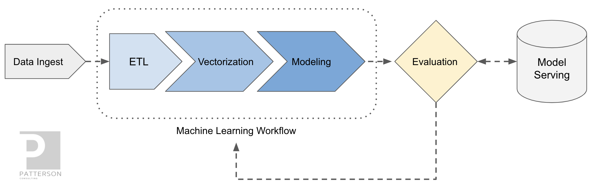
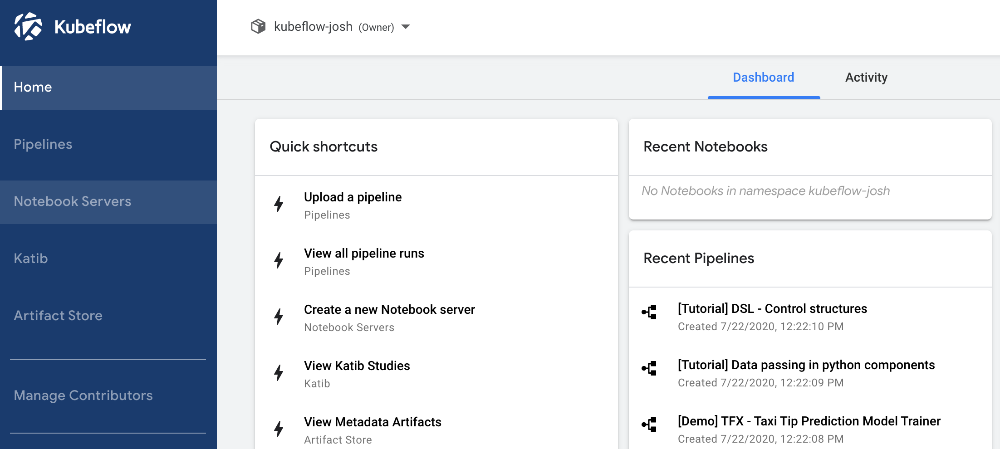
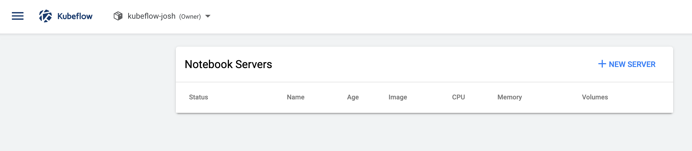
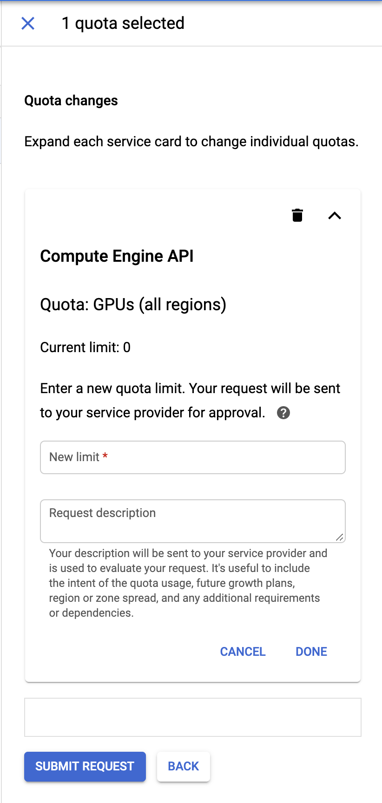
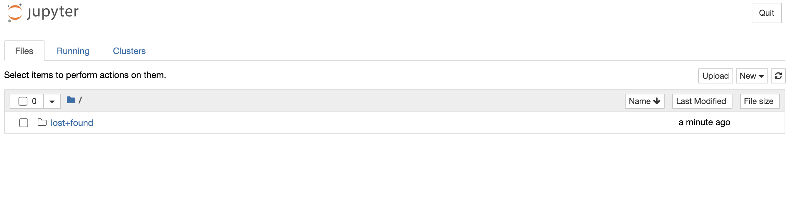
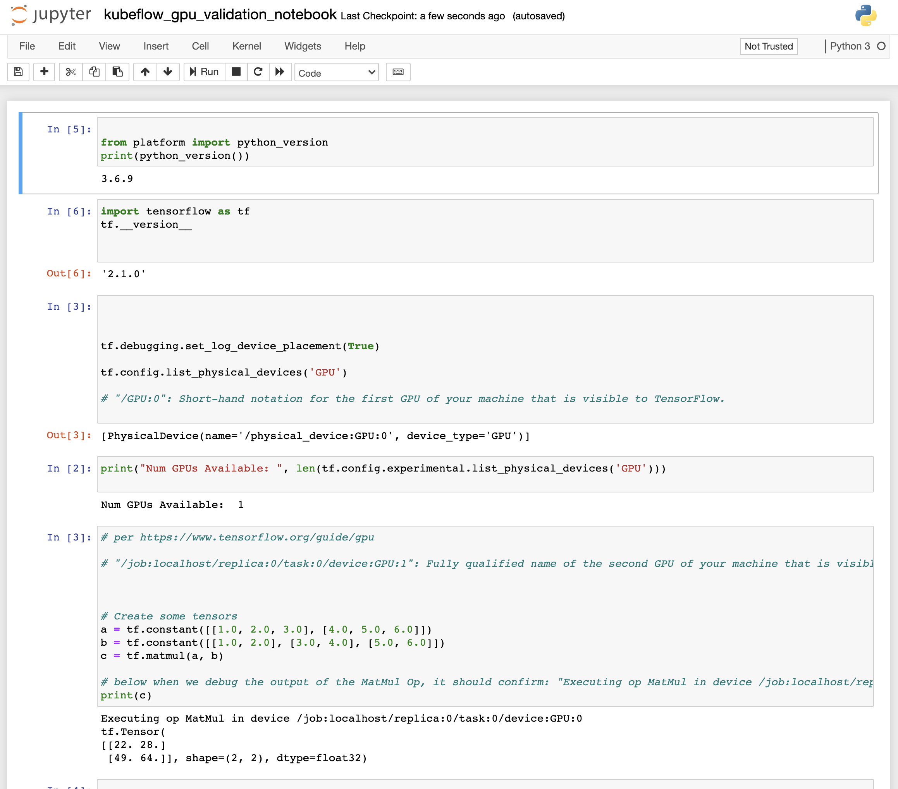

Accelerating Smart City Ticket Data Modeling with Kubeflow 1.0 and GPUs

Author: Josh Patterson
In our last post we used Keras to build a MLP model to predict which sections of local roadways would be likely to see speeding citations in 2020 with a variety of metrics.
In this post we'll further build on those concepts to run the Jupyter Notebook for modeling from part 1 and run it on Kubeflow to leverage GPUs for faster training. Previously we covered using GPUs on GCP for just a single VM and NVIDIA GPUs. In this post we'll use GPUs on GCP in a Jupyter Notebook on the Kubeflow 1.0 platform.
We highlight this usage pattern as many times a data science initiative starts as a local laptop idea on a small amount of data using CPUs. As the data size increases and/or model complexity increases, we quickly look to GPUs as a way to shorten our modeling development iterations. We also highlight the Kubeflow platform beyond just a single instance Jupyter notebook as often a user is at a loss on where to go next with their model beyond just a simple notebook. The Kubeflow platform offers GPU integration, metadata-tracking, identity management, multi-user security, and model deployment management components.
From a logical perspective this article is focused on the data ETL, vectorization, modeling, and evaluation phase of the machine learning workflow, as shown in the figure below.
Notebook infrastructure has proven to be a key took for this part of the machine learning workflow. The Kubeflow 1.0 platform provides an integrated experience for the machine learning practitioner to execute Jupyter Notebooks on-premise or in the cloud, on CPU or on GPUs.
In this post (and subsequent related posts) we show this real-world evolution and how a locally developed notebook could be moved to a multi-tenant system (e.g., Kubeflow) while using GPUs.
Prerequisites
To do this tutorial you'll either need to have a Kubeflow cluster already setup or you'll need to follow the Kubeflow getting started guide.
There are instructions to quickly getting Kubeflow 1.0 running on most major clouds. For the purposes of this article we'll run Kubeflow on Google Cloud.
Launch your Notebook Server with GPUs
"You can set up multiple notebook servers per Kubeflow deployment. Each notebook server can include multiple notebooks. Each notebook server belongs to a single namespace, which corresponds to the project group or team for that server." "
Kubeflow has a tab for launching notebook servers as shown in the image below.
We can setup multiple notebook servers per Kubeflow deployment. To launch a notebook server from Kubelow, we use the "New Server" button on the Notebook Servers page in Kubeflow as seen in the figure below.
Each of these new notebook servers we launch belongs to a namespace corresponding to the project group or team for that server. Each notebook server can launch multiple notebooks from the Jupyter notebook UI.
Now that we know a little about how to launch a new notebook server in Kubeflow 1.0, let's launch our notebook and configure it for accelerating our training code with GPUs on GCP.
Configure Notebook Server
Once you click on the "New Server" button from the Notebooks tab in Kubeflow, you will see a page to configure the new notebook server as shown in the figure below.

Most of the configuration options you can accept the defaults for (e.g., Namespace, CPU/RAM, etc). We'll use the transient storage that is local to the docker image VM and won't need to setup persistent storage in this example (although you may for other projects). However, we have some dependencies for our citations notebook that we need to install in our notebook.
Managing Notebook Container Dependencies
There are two main methods for managing dependencies for notebooks in Kubeflow:
- use
pipto dynamically install dependencies from inside a notebook cell - build a custom notebook docker image with the dependencies already built in
If you know you'll be using these same set of dependencies over and over, you may want to build your own Docker image for this specific Kubeflow Jupyter notebook. Other reasons to build your own Docker images include:
- if you don't have permissions in your environment to run
pipfrom the notebook - if your Kubeflow cluster does not have internet access
Dependency Best Practices
In both methods (building a new docker image vs installing inside the notebook), installing dependencies from a requirements.txt file is a best practice.
Ideally we'd just pull in our dependencies inside the notebook. However, our code depends on rtree which can be persnickety about installing so we need more control about how it is installed in the local image environment. We're going to have to build a custom docker image based to run our GPU notebook on Kubeflow.
Build a Custom Notebook Docker Image
In the code block below you can see the dockerfile code we need to build our new docker image.
In the code listing above we're just using the existing latest TensorFlow 2.1 notebook image that already has support for GPUs. Leveraging this existing image allows us to benefit from all of the work the Kubeflow team already did in their image build process and simply add in the dependencies (here: rtree) that we need.

rtree is Challenging to Install
rtree will not install via pip and the normal requirements.txt dependencies. It will conflict with multiple other methods of install (depending on your platform) via a normal pip, so to get it working we need to use apt to install a key dependency (libspatialindex-dev) and build a custom docker image. Otherwise we could use the standard docker image for Kubeflow notebooks and load the dependencies at runtime in the notebook.
You can skip the above steps if you want and just use the docker image we have already built:
docker.io/pattersonconsulting/citations-kf-notebook-gpu
Now that we have an image to run on GCP and Kubeflow for our GPU notebooks, we need to make sure we can actually get machines with GPUs on GCP.
Enabling GPUs for You Kubeflow Deployment's Cluster
By default Google sets quotas on Google Cloud to 0 for certain types of resources. A great primer on the basics of GPUs and quotas is on the Google Cloud documentation. GPU instances on the Compute Engine API have a default quota set to 0 for any new project created on Google Cloud, so we need to raise our project's quota for GPUS.
To request our quota change, in the GCP web console click on "IAM & Admin"-"Quotas" and filter the list of quotas on "Compute Engine API" and "GPUs (all regions)" as seen in the figure below.

Once you click on "Edit Quotas" with the "Compute Engine" row seleted (shown above) for the Limit Name "GPUs (all regions)", you will see the panel shown in the figure below.

Changing Quotas Can Take 1-2 Days to Process
Once we have confirmed that our GPU quota limit has been raised, we can move on and launch the notebook server with GPUs and our custom docker image.
Launch Notebook Server
Once you have input the custom docker image in the notebook server configuration page and confirmed that the GCP GPU quota limit has been raised, you can hit the "launch" button at the bottom and start the notebook server. The screen will now show a list of running notebook servers, and you can see our notebook server in a loading state.
Once the notebook server is finished loading, you will be able to hit the "CONNECT" button on the row for your server on the "Notebook Servers" page. This will launch a Jupyter
From this page we can upload our notebook and test out the GPUs. Before we load our Citations notebook, let's first run a GPU test notebook to confirm that the notebook can indeed use the GPUs on GCP.
Confirm GPUs are Working with Test Notebook
To get the GPU with our notebook server a test fire we can load up the provided notebook on our github repository. Once you download this notebook and then upload it to the notebook server, you will be able to see it as shown in the figure below.

You likely won't have to spend too much time with this notebook, its just meant as quick sanity check to confirm that we're on the right version of TensorFlow with a docker image that can see the local GPU. At the bottom cell in the notebook, you will also see some basic tensor operations executing and being run on /job:localhost/replica:0/task:0/device:GPU:0 indicating that the code is running physically on the local GPU.
Load Smart City Notebook
At this point we have Kubeflow installed on GCP and we know that our custom docker image works with GPUs on notebooks. We are ready to launch the Citations notebook from the previous post and run it with GPUss.
You can clone the repository at:
https://github.com/jpatanooga/kubeflow_ops_book_dev/tree/master/notebooks/citations
Once you have the citations notebook on your local machine you can upload it to the same notebook server's Jupyter page in a directory named Code on the Jupyter notebook server. You can create directories via the Jupyter notebook main UI.
Multiple Notebooks and a Single GPU
Upload Training Data
You will need to also create a Data directory on the Jupyter notebook server and upload the data from:
Once you have that file downloaded, uncompress it and upload the contents into your Jupyter notebook server inside the Data directory. We should now be ready to run the notebook on GPUs.
Working with the Smart City Notebook
At this point you should be able to work with the notebook normally as you would locally under Anaconda on CPU or on GCP and Kubeflow with CPU. You'll notice in the cell output that some tasks will be put on the CPU and then the tensor operations will be placed on the GPU, as shown in the example console output listing below.
Summary
In this article we walked the reader through the specific steps to enable a GPU notebook server to launch under Kubeflow on GCP so we can use a GPU to accelerate our notebook Tensorflow training code.
In future articles we're going to take a look at enabling TPUs and then the new NVIDIA DGX-A100 GCP instances for Kubeflow notebooks.
If you'd like to know more about Kubeflow and KFServing, please check out the project homepage, contact us, or check out our upcoming book with Oreilly on "Kubeflow Operations".
Patterson Consulting also provides a managed service offering for Kubeflow clusters (on-premise and in the cloud).